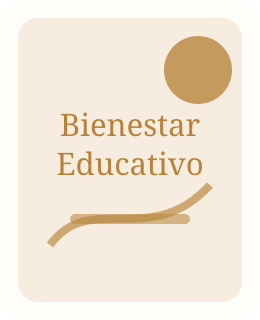

Líneas de trabajo organizadas como portafolio académico: cada proyecto incluye problema, enfoque, métodos sugeridos, resultados esperados y productos publicables.
Voces Ancestrales de la Educación
Estado: proyecto central / tesis presentada en 2024
Proyecto sobre saberes de pueblos originarios del Oriente boliviano y su contribución a un nuevo paradigma de transformación educativa.
Preguntas orientadoras
¿Qué saberes comunitarios pueden incorporarse al debate educativo contemporáneo?
¿Cómo traducir esos saberes en propuestas de política educativa sin folclorizarlos?
¿Qué tensiones existen entre currículo oficial, memoria cultural y educación intercultural?
Análisis de cómo la educación intercultural puede pasar de discurso normativo a política pública sostenible, con indicadores, actores, presupuesto y mecanismos de evaluación.
Productos sugeridos
Documento de trabajo sobre educación intercultural como política de Estado.
Mapa de actores educativos, comunitarios e institucionales.
Propuesta de seminario o mesa de diálogo para Santa Cruz.
Diseño institucionalEvaluaciónBolivia

Desarrollo del ser, bienestar y convivencia escolar
Estado: proyecto aplicado
Línea orientada a conectar liderazgo, bienestar emocional, convivencia y permanencia escolar, evitando enfoques meramente motivacionales y priorizando evidencia, pedagogía y evaluación.
Métodos sugeridos
Entrevistas a docentes, estudiantes y familias.
Diseño de talleres con evaluación antes/después.
Guías de intervención para comunidades educativas.
BienestarConvivenciaIntervención educativa
CIRCPyCS · Diseño Teórico de un Modelo Educativo Territorializado para Santa Cruz
ID: EDU-TERRITORIAL-26 · Estado: estudio estratégico en formulación
Investigación integral para construir un modelo educativo territorializado que integre interculturalidad, ecopedagogía y bienestar emocional frente a las brechas de implementación de la Ley 070.
Arquitectura del proyecto
Fase 1 (Atlas): cruce geoespacial de matrícula/abandono con variables censales para identificar desigualdades territoriales.
Fase 2 (Diagnóstico socioemocional): medición de salud mental, tolerancia a la frustración y desarraigo ecológico en zonas urbanas y rurales.
Fase 3 (Estudio antropológico): sistematización de saberes Chiquitana, Ayorea y Guaraya mediante etnografía aplicada.
Fase 4 (Gobernanza autonómica): análisis jurídico-político para viabilizar financiamiento e implementación curricular territorializada.
Objetivo central
Diseñar fundamentos teóricos, pedagógicos y jurídicos para una malla curricular contextualizada para Santa Cruz, con evidencia empírica útil para tomadores de decisión pública.
Repositorio digital para sistematizar entrevistas, recursos, bibliografía, fotografías, cronologías y materiales de divulgación sobre educación, cultura y políticas públicas.
Componentes
Fichas de entrevistas y testimonios con consentimiento informado.
Biblioteca temática sobre educación intercultural.